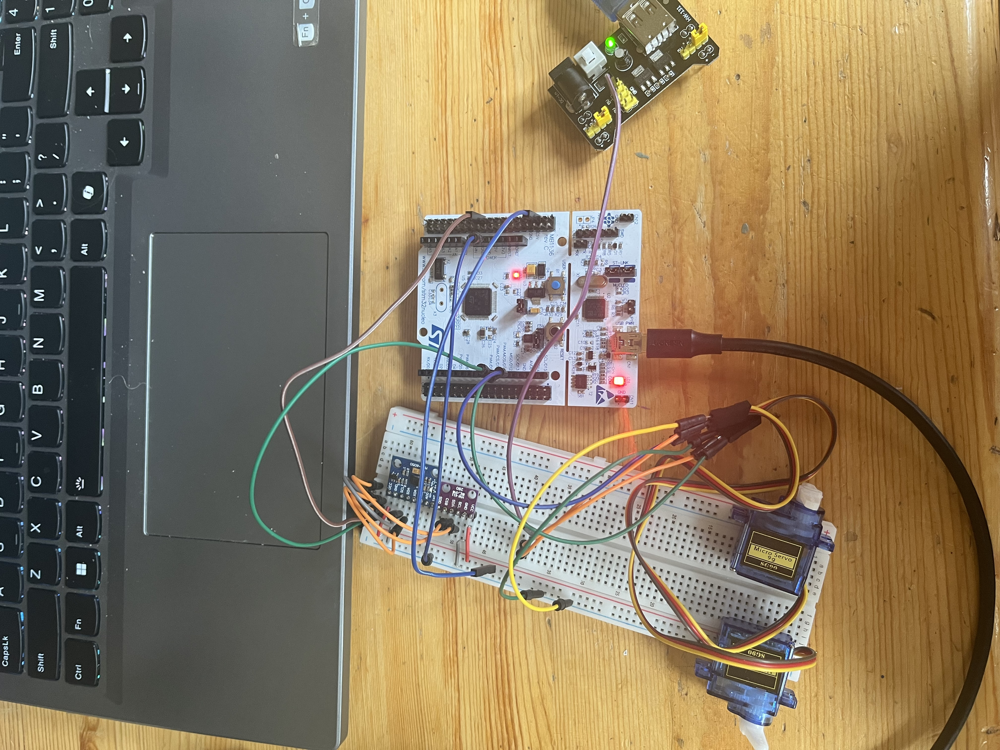

Self-Stabilizing Plane: IMU + Barometer Fusion on STM32
A bare-metal embedded firmware project on an STM32F411RE Nucleo board that reads an MPU6050 IMU and a BMP280 barometric pressure sensor over a shared I²C bus, fuses that data into a live pitch/roll attitude estimate and altitude, and closes the loop with two PID controllers driving a pair of aileron servos toward wings-level, self-stabilizing flight. Written in C against the STM32 HAL, configured with STM32CubeMX/CubeIDE, with results streamed live over UART.
Pitch and roll come from the accelerometer's gravity vector via atan2, combined with angular
rates from the gyroscope through a complementary filter (high-pass on the gyro, low-pass on the
accelerometer), using a measured loop dt rather than an assumed constant, so the drift-corrected
attitude estimate stays accurate regardless of loop timing. In parallel, the BMP280's raw pressure and
temperature readings are run through Bosch's factory calibration/compensation formulas and converted to
altitude with the standard barometric formula.
That filtered pitch/roll now feeds two independent PID controllers (roll: kp=3.3, ki=1.1, kd=0.5;
pitch: kp=4.1, ki=0.8, kd=0.3), each computing derivative-on-measurement to avoid kick and
clamping the integral term to prevent windup. The two correction outputs are mixed elevon-style, adding and
subtracting the roll term between two servo channels on TIM3 (PA6/PA7) so the ailerons move opposite for
roll correction and together for pitch correction, driving the airframe back toward level. Getting the PWM
right surfaced its own quirk: TIM3's configured prescaler/period give a real refresh rate of roughly 42 Hz
rather than the textbook 50 Hz, close enough for most analog hobby servos but not exactly on spec. The PID
gains above are untuned starting points pending bench and flight testing.
This was a first embedded-systems project from scratch, and the debugging was as instructive as the
result: tracing a bus that reported stuck-BUSY on the very first I²C transaction back to
an unconfigured system clock, chasing intermittent NACKs to marginal breadboard connections, and working
around a clone MPU6050 that reported the wrong WHO_AM_I identity byte.
